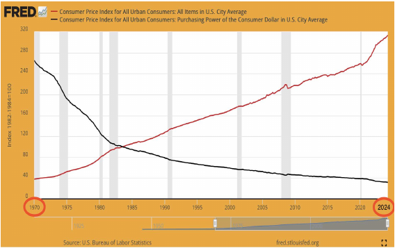
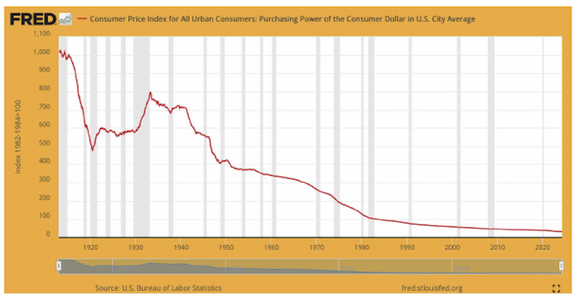

tüm çocuklarımız için,
Satoshi ve Şifrepunk'lara teşekkürlerimle
Basit hayatı seviyorum,
Doğayı seviyorum,
Yalınayak olmayı seviyorum,
Yaratıcılığı ateşleyen, ilham verici, derin sohbetleri seviyorum.
Özgürlüğü seviyorum.
Ve, bitcoin'i seviyorum.
Sevgi büyük bir kelime, bitcoin büyük bir sevgiyi hak ediyor.
Varlığı, insanlık tarihinin en zorlu döneminde
parlak bir ışık noktasıdır.
Bu kitabı, bitcoin'i ve neden ona ihtiyacımız olduğunu
daha çok arayana daha erişilebilir kılma umuduyla yazdım.
Bu kitap, benim ve birçoklarının keşfettiği gibi,
sonsuz, hayat değiştiren ve büyüleyici
bir tavşan deliğinin başlangıç noktasıdır!
Turuncu hapı yutmanız, özgür olmanız
ve bu yolculuktan zenginleşmiş olarak çıkmanız dileğiyle!
738922
v
Bitcoin adında yeni bir açık kaynaklı P2P e-nakit sistemi geliştirdim.
Tamamen merkeziyetsiz bir sistem, merkezi bir sunucu veya güvenilir taraflar yok,
çünkü her şey güven yerine kriptografik kanıta dayanıyor.
Bir deneyin veya ekran görüntülerine ve tasarım belgesine göz atın:
Bitcoin v0.1'i http://www.bitcoin.org adresinden indirin
~ Satoshi Nakamoto 2009-02-11 22:27:00 UTC metzdowd.com'da yayınlandı,
erken dönem bir kriptografi posta listesi
viii
NEDEN  'e İHTİYACIMIZ VAR
'e İHTİYACIMIZ VAR
'e İHTİYACIMIZ VAR
ÇÜNKÜ PARA BOZUK
Geleneksel para biriminin temel sorunu, çalışması için gerekli olan tüm o güvendir. Merkez bankasına para birimini değersizleştirmeyeceği konusunda güvenmek zorundayız, ancak fiat paraların tarihi bu güvenin ihlalleriyle doludur. Bankalara paramızı tutmaları ve elektronik olarak transfer etmeleri için güvenmemiz gerekir, ancak onlar rezervde sadece küçük bir kısmını tutarak kredi balonları yaratacak şekilde borç verirler. Gizliliğimiz konusunda onlara güvenmek zorundayız ve kimlik hırsızlarının hesaplarımızı boşaltmasına izin vermeyeceklerine de güvenmeliyiz.
~ Satoshi Nakamoto 2009-02-11
Fiat para sistemi bozuktur (her zaman öyleydi).
Sürdürülebilir değildir (hiçbir zaman olmadı).
Onu düzeltmenin bir yolu yok (asla olmayacak)
1
(OLMAYAN) ALTIN STANDARDI
Birçok insan hala paranın altınla desteklendiğine inanıyor.
1971'den beri, Başkan Nixon'ın tek taraflı olarak dünyayı altın standardından çıkardığı zamandan beri (Nixon Şoku) altınla desteklenmiyor.

1971'den bu yana Tüketici Fiyat Endeksi enflasyonunu (kırmızı çizgi) ve ABD dolarının satın alma gücünü (siyah çizgi) gösteren grafik.
ABD Çalışma İstatistikleri Bürosu, St. Louis Federal Rezerv Bankası FRED'den alınmıştır; https://fred.stlouisfed.org/series/CPIAUCSL, 9 Haziran 2024.
İlginç Bilgi: Dünya Ekonomik Forumu 1971'de kuruldu.
2
FIAT: (isim) /ˈfiː.æt/
: yetkili veya keyfi bir emir : EMIR
: yetkili bir belirleme : DIKTE
: daha fazla çaba olmadan veya olmayan bir şey yaratan bir komut veya irade eylemi
~ merriam-webster.com/dictionary
FIAT: Latince fieri «yapılmak, meydana gelmek» kelimesinden
Fiat, sadece hükümetin değeri olduğunu söylediği (emir verdiği) için değeri olan paradır.
Bu nedenle insanlar (mecburen) değeri olduğuna inanırlar.
Fiat'ın değeri olduğuna inanmasalar bile, yasa gereği onu kullanmak ve mal ve hizmetler için ödeme olarak kabul etmek zorundadırlar.
Fiat para yoktan var edilir/yaratılır.
Günümüzde tüm dolarların yaklaşık %5'i nakit olarak basılır.
Diğer %95'i, bankalar kredi verirken bir bilgisayara rakamlar girerek dijital olarak yaratılır.
100 dolarlık bir banknot üretmek, Gravür ve Baskı Bürosu'na sadece birkaç sente mal oluyor…
~ Amerikalı Ekonomist, Barry Eichengreen
3
NBC '60 Dakika'dan Scott Pelley: Sistemi basitçe paraya boğduğunuzu söylemek doğru olur mu?
Fed Başkanı Jerome Powell: Evet. Yaptık. Bu, bunu düşünmenin başka bir yolu. Yaptık.
Pelley: Nereden geliyor? Sadece basıyor musunuz?
Powell: Dijital olarak basıyoruz. Yani merkez bankası olarak, para yaratma yeteneğimiz var. Ve bunu hazine bonoları veya diğer devlet garantili menkul kıymetleri satın alarak yapıyoruz. Ve bu aslında para arzını artırıyor. Ayrıca gerçek para basıyoruz ve bunu Federal Rezerv bankaları aracılığıyla dağıtıyoruz.
~ CNBC '60 Dakika' Röportajı,
17 Mayıs 2020, C*vid-19 karantinasının başlamasından iki ay sonra
Bu kredi programlarıyla yapabileceğimiz şeylerin
gerçekten bir sınırı yok.
~ Fed Başkanı Jerome Powell
18 Mart 2020'de CBS News'de
Evet, Federal Rezerv'de sonsuz miktarda nakit var. Bankacılık sisteminde yeterli nakit olmasını sağlamak için ne gerekiyorsa yapacağız.
~ Minneapolis Fed Başkanı Neel Kashkari
23 Mart 2020, CBS '60 Dakika'
Buradaki 'biz', FOMC toplantıları sırasında Federal Rezerv sistemi içinde para politikasındaki değişiklikler üzerine oy kullanan beş kişidir.
~ @MartyBent, TFTC.io'nun Kurucusu
Forbes Makalesi, 18 Mart 2020
4
ESKİLERİN AĞZINDAN
Banka, hiçbir şeyden yarattığı tüm paralar üzerinde faiz kazanma avantajına sahiptir.
~ William Paterson,
1694 İngiltere Bankası'nın Kurucusu
Amerika'daki tüm karmaşıklıklar, kafa karışıklığı ve sıkıntılar, Anayasa'nın veya Konfederasyon'un kusurlarından, onur veya erdem eksikliğinden değil, para, kredi ve dolaşımın doğası hakkındaki tam bir bilgisizlikten kaynaklanmaktadır.
~ John Adams
Amerika Birleşik Devletleri'nin 2. Başkanı, 1797-1801
Bankacılık kurumlarının özgürlüklerimiz için düzenli ordulardan daha tehlikeli olduğuna inanıyorum. Zaten hükümete meydan okuyan bir para aristokrasisi yarattılar. Para basma yetkisi bankalardan alınmalı ve ait olduğu halka iade edilmelidir.
~ Thomas Jefferson
Amerika Birleşik Devletleri'nin 3. Başkanı, 1801-1809
Soylu işlerimizle övünürken, haksız bir para sistemiyle, daha rafine olsa da eski kölelik sisteminden daha az acımasız olmayan bir zulüm sistemini millileştirdiğimiz çirkin gerçeğini gizleme konusunda dikkatliydik.
~ Horace Greeley
ABD Kongre Üyesi 1848-49
The New York Tribune'ün Kurucusu
5
Herhangi bir ülkede para hacmini kontrol eden kişi,
tüm sanayi ve ticaretin mutlak efendisidir…
Tüm sistemin, bir şekilde, tepedeki birkaç güçlü adam tarafından
çok kolay kontrol edildiğini anladığınızda, enflasyon ve
depresyon dönemlerinin nasıl ortaya çıktığını size
söylememize gerek kalmayacak.
~ James A.Garfield
Amerika Birleşik Devletleri'nin 20. Başkanı, Mart-Eylül 1881
1881'de suikaste uğradı
Bugün bir grup insanın elinde, hiçbir şeyden dolar yaratma gücü kontrolsüz bir şekilde var.
~ Thomas W.Lawson, 'Çılgın Finans' kitabının yazarı, 1905
Herhangi bir komplocu kadar gizli - hatta sinsice - davrandım. Keşfedilmemesi gerektiğini biliyorduk, aksi takdirde tüm zamanımız ve çabamız boşa gidecekti. Özel grubumuzun bir araya gelip bir bankacılık yasası yazdığı ortaya çıkarsa, bu yasanın Kongre tarafından geçme şansı olmazdı.
~ Frank A.Vanderlip
New York City Bank'ın Başkanı
(Citibank'ın önceki adı)
~ 1913'te Federal Rezerv Yasası olarak geçen tasarıyı hazırlamak için
1910'da Jekyll Adası'nda gerçekleşen gizli toplantı hakkında
1935'te yazmıştır.
Bu (Federal Rezerv) Yasa, yeryüzündeki en devasa tekeli kuruyor.
Başkan (Woodrow Wilson) bu yasa'yı imzaladığında, Parasal Gücün
görünmez hükümeti yasal hale gelecek…
Çağların en kötü yasal suçu, bu bankacılık ve
para birimi yasası ile işleniyor.
~ Charles A.Lindbergh, Sr.
ABD Kongre Üyesi 1907-1917
6
Ben çok mutsuz bir adamım. Farkında olmadan ülkemi mahvettim.
Büyük bir sanayi ulusu, kredi sistemi tarafından kontrol ediliyor.
Kredi sistemimiz merkezileşmiştir. Bu nedenle, ulusun büyümesi
ve tüm faaliyetlerimiz, birkaç kişinin elindedir.
En kötü yönetilen, en fazla kontrol edilen ve
medeni dünyadaki en baskın hükümetlerden biri haline geldik:
Artık özgür düşünceye dayalı bir hükümet değil,
artık çoğunluğun inancına ve oyuna dayalı bir hükümet değil,
küçük bir baskın grup insanın görüşüne ve
zorlamasına dayalı bir hükümet
~ Woodrow Wilson
ABD'nin 28. Başkanı, 1913-1921
1913 Federal Rezerv Yasası'nı geçirdikten 6 yıl sonra
Meselenin gerçek özü, sizin ve benim bildiğimiz gibi,
büyük merkezlerdeki bir finansal unsurun,
Andrew Jackson'ın günlerinden beri
ABD hükümetine sahip olmasıdır.
~ Franklin D.Roosevelt
ABD'nin 32. Başkanı,
21 Kasım 1933'te Albay E. Mandell House'a yazdığı bir mektupta
Bu (büyük buhran) kazara olmadı.
Dikkatle tasarlanmış bir olaydı…
Uluslararası bankerler, hepimizin
yöneticileri olarak ortaya çıkabilmek için
burada bir umutsuzluk durumu yaratmaya çalıştılar.
~ Kongre Üyesi Louis T. McFadden,
1936'da suikaste uğradı
Temsilciler Meclisi Bankacılık ve Para Birimi Komitesi Başkanı
Bir banka her kredi verdiğinde,
yeni banka kredisi yaratılır - yeni mevduat
- yepyeni para.
~ Graham F. Towers
Kanada Merkez Bankası Başkanı, 1934-55
7
Para sistemimizde borç olmasaydı, hiç para olmazdı
~ Marriner Eccles,
1941, Fed Başkanı
Mantık ve akıl kullanarak Federal hükümetin kendi parasını ödünç almasını
haklı çıkarabilecek hiç kimseyle karşılaşmadım…
İnanıyorum ki, insanların bunun değiştirilmesini
talep edeceği zaman gelecek.
İnanıyorum ki, bu ülkede insanların gerçekten
sizi, beni ve Kongre ile bağlantılı
herkesi suçlayacağı zaman gelecek,
böylesine aptalca bir sistemin devam etmesine
sessizce izin verdiğimiz için.
~ Wright Patman
ABD Kongre Üyesi 1928-1976
Bankacılık ve Para Birimi Komitesi Başkanı 1963-1975
Siz ya da ben bir çek yazdığımızda, hesabımızda çeki karşılayacak
yeterli fon olmalıdır, ancak Federal Rezerv bir çek yazdığında,
o çekin çekildiği bir banka mevduatı yoktur. Federal Rezerv
bir çek yazdığında, para yaratıyor demektir.
~ Boston Federal Rezerv Bankası
'Basitçe Anlatmak', 1984
8
FEDERAL REZERV
Fed, ABD'nin 'bağımsız' merkez bankasıdır. 1913'te
Federal Rezerv Yasası'nın geçmesiyle kurulmuştur.
Kısmen özel ve kısmen devlet olan benzersiz bir
yapıya sahiptir.
Hükümet içinde siyasi olarak bağımsız,
tarafsız bir kuruluş olması amaçlanmıştır.
Fed Yönetim Kurulu, Başkan tarafından atanıp Kongre
tarafından onaylanmasına rağmen,
Fed'in kararlarının kimse tarafından onaylanmasına
gerek yoktur.
Şunlardan oluşur:
Federal Rezerv Yönetim Kurulu
12 Federal Rezerv Bankası
Federal Açık Piyasa Komitesi (FOMC),
bu para politikası yapım organıdır.
Fed'in sorumlulukları şunlardır:
ABD para politikasını denetlemek, istihdamı ve fiyat
istikrarını teşvik etmek.
Bankacılık ve finans kurumlarını düzenlemek ve
denetlemek.
Finans kurumlarına ödeme hizmetleri sağlamak.
Tüketici korumasını ve toplum kalkınmasını
teşvik etmek.
9
PETRO DOLAR ÜZERİNE BİR NOT
1971'e kadar doların altınla desteklendiğini, 1974'ten beri ise petrol ve dolayısıyla varsayılan olarak ABD Ordusu tarafından desteklendiğini söyleyebiliriz.
1974'te ABD ve Suudi Arabistan, petrol satışlarını ABD doları cinsinden fiyatlandırmak için ikili anlaşma imzaladı.
O zamandan beri, küresel petrol satışlarının çoğu ABD doları üzerinden gerçekleştirilmektedir.
Bu durum, doların dünyanın en güçlü para birimi haline gelmesine büyük katkı sağlamıştır.
Böylece dolar, normalde zorlanacağı zamanlarda bile yapay olarak desteklenmiştir.
2022'nin sonlarından itibaren, bir dizi ülke ABD doları dışındaki para birimleriyle ticaret yapmaya başladı.
Bu, petro doların sonunun başlangıcı olabilir. Bundan sonra ne olacağı henüz bilinmiyor…
12
NİCEL GENİŞLEME (QUANTITATIVE EASING)
Nicel Genişleme, Merkez Bankaları tarafından 'ekonomiyi canlandırmak' için kullanılan 'geleneksel olmayan bir para politikası' olarak kabul edilir. Bu politikada Fed, devlet tahvilleri ve diğer devlet menkul kıymetlerini satın alır.
İlk olarak Japonya tarafından 2001-2006 yılları arasında kullanıldı. Ardından, ABD, İngiltere ve Avro Bölgesi 2008 finansal krizi sırasında Nicel Genişleme'yi kullandı.
O zamandan beri, ABD'nin Nicel Genişleme programı uygulamadığı tek dönem 2014-2019 yılları arasıydı.
Aşağıda görüldüğü gibi, eleştirmenler Nicel Genişleme'nin ezici bir şekilde zaten zengin olanların yararına olduğunu iddia ediyorlar.
13
'e İHTİYACIMIZ VAR
ÇÜNKÜ ENFLASYON HIRSIZLIKTIR

2024 FRED grafiği, Federal Rezerv'in 1913'te kurulmasından bu yana doların satın alma gücünün düşüşünü gösteriyor.
1913'ten bu yana kümülatif enflasyon oranı yaklaşık
%3.067'dir. Dünyadaki tüm merkez bankası fiat para birimleri
benzer bir düşüş oranını takip etmektedir.
Yoktan var edilen para miktarı ne kadar çoksa, tüm paranın değeri/satın alma gücü o kadar azalır.
Enflasyon, kelimenin tam anlamıyla zaman hırsızlığıdır. Enflasyona uğrayan, değeri düşürülen ve manipüle edilen bir para biriminde biriktirdiğinizde zamanınızın değeri çalınır.
Enflasyon aynı zamanda gizli bir vergidir.
16
ABD'de son 50 yıldaki Ortalama Enflasyon:
| Ortalama Maliyet |
1971 |
2024 |
% Artış |
| Maaş |
$9,400 |
$59,400 |
532% |
| Ev |
$23,400 |
$513,000 |
2,092% |
| Benzin Galonu |
$0.36 |
$4.17 |
1,058% |
| Yeni Araba |
$3,400 |
$47,000 |
1,282% |
| Üniversite Diploması |
$1,400 |
$26,000 |
1,757% |
| Market Alışverişi Sepeti |
$20 |
$210 |
950% |
| Elektrik/kWh |
$0.02 |
$0.15 |
650% |
Gerçek Bir Hikaye:
~ 1976'da bir ev 58,000 dolara alındı.
~ 'Resmi' enflasyon hesaba katıldığında, bu 2022 dolarıyla
279,000 dolar ederdi.
~ 2022'de aynı ev 2.09 milyon dolar değerindeydi.
~ Bunu bir düşünün…
Fiat para birimi dezenformasyondur.
10 dolarlık bir banknot ne bilgi verir?
10 sayısı, paydası eksik bir kesrin pay kısmıdır.
10 bölü ne?
Bilinen ve sabit bir payda olmadan 10 sayısı hiçbir şey ifade etmez.
18
Başka bir bakış açısıyla da şöyle düşünülebilir:
1971'de, bir evin maliyeti = ortalama yıllık maaşın 2.5 katıydı.
2024'te, bir evin maliyeti = ortalama yıllık maaşın 8.6 katıdır.
1971'de, yeni bir araba ortalama maaşın yaklaşık 1/3'üne mal oluyordu.
2024'te, yeni bir araba ortalama maaşın 3/4'ünden fazlasına mal oluyor.
Artık enflasyonun
sizin lehinize
*çalışmadığının*
açık olduğuna inanıyorum.
Not: Bu rakamların hepsi ortalamadır ve birçok faktöre bağlı olarak değişkenlik gösterir. Esas nokta şudur ki, enflasyon gizli bir vergidir ve gerçek emeğimizin ve üretimimizin üzerine yapılan bir zaman hırsızlığıdır.
Sağlam para bunu düzeltir.
20
MERKEZİ OLARAK KONTROL EDİLEN, MANİPÜLE EDİLEN,
BORÇ TABANLI EKONOMİYİ DEĞİŞTİRMEK İÇİN
'e İHTİYACIMIZ VAR
İyi bir paraya tekrar sahip olacağımıza inanmıyorum,
ta ki bu şeyi hükümetin elinden alana kadar,
yani bunu hükümetin elinden zorla alamayız,
yapabileceğimiz tek şey, kurnazca ve dolaylı bir yolla
onların durduramayacağı bir şey ortaya koymaktır.
~ Friedrich Hayek, 1984
Avusturyalı Ekonomist, Filozof ve Yazar, 1899-1992
Mart 2020'de 4 trilyon dolardan Haziran 2024'te 18 trilyon doların
üzerine çıkan üstel M1 Para Arzı artışını gösteren grafik.
21
Mevcut tüm ABD dolarlarının %45'i Nisan 2020 ile
Ocak 2022 arasında basıldı!
Yani yoktan var edildi, hatırlıyor musunuz?
Fiat para devlet tarafından merkezi olarak kontrol edilir
ve arzı kolayca manipüle edilebilir.
ABD Ulusal Borcunun 1 trilyon dolara ulaşması
205 yıl sürdü.
(1776 > 1981)
ABD Ulusal Borcunun
34 trilyon dolara
ulaşması
sadece 33 yıl daha sürdü!
(1981 > 2024)
ABD'de 1970-2024 yılları arasındaki Toplam Kamu Borcunu gösteren FRED Grafiği.
Uluslararası Finans Enstitüsü tarafından ölçülen
küresel borç şu anda 303 TRİLYON DOLAR.
Bu, borca dayalı fiat para sistemindeki gezegenimizin durumu.
Bu arada, küresel GSYİH sadece 84 trilyon dolar.
~ Nik Bhatia, 'Katmanlı Para' kitabının yazarı, 2021
22
Bu durum, merkez bankasının eşi görülmemiş, seçilmemiş ve nihayetinde otoriter bir güce sahip olan İlk Başvuru Mercii Yöneticisi haline gelmesine yol açtı.
Bitcoin dışında tüm para siyasidir.
Fiat para birimleri, bankacılık araçları, fintech kredileri,
diğer kripto paralar ve hatta altın bile hükümetler,
şirketler veya küçük gruplar tarafından kontrol edilir.
Geleceğe doğru ilerlerken bir istisnanın olması
çok faydalı olacaktır.
~ Alex Gladstein @gladstein
İnsan Hakları Vakfı Baş Strateji Sorumlusu
Bitcoin 8 milyar insanı birbirine bağlar, yüz milyon şirketi
birbirine bağlar, dünyayı siyasi yargı alanları arasında
senkronize eder, tüm finansal sisteme rasyonelliği geri
getirir ve tüm insan ırkına özgürlük ve mülkiyet haklarını
geri kazandırır.
~ Michael Saylor
Microstrategy CEO'su
24
BANKACILIK HİZMETİ ALMAYANLAR İÇİN
'e İHTİYACIMIZ VAR
Zayıflayan para birimlerine sahip 20 ülkedeki 953 milyon
insan için Bitcoin, bir hazine varlığından daha fazlasını
temsil ediyor. Onlar için bu, daha çok seli atlatmak için
şifrelenmiş enerji dolu bir gemi gibi.
~ Michael Saylor
Microstrategy CEO'su
2024 itibarıyla, dünya genelinde yetişkinlerin yaklaşık
%25'i, yani yaklaşık 1,4 milyar insan bankacılık hizmeti
alamıyor!
Bu, bankacılık hizmetlerine erişimlerinin olmadığı
ve ATM'leri, banka kartlarını, kredi kartlarını veya
çekleri kullanamadıkları anlamına geliyor.
Ayrıca, iş kurmak, araba veya ev almak için kredi çekemiyorlar.
Para göndermek ve almak veya çek bozdurma işlemleri pahalı.
Western Union gibi yüksek ücret alan ve işlem süresi
uzun olan para transfer ve çek bozdurma hizmetlerini
kullanmak zorundalar.
Bu durum, başka ülkelerdeki ailelerine para gönderen
kişiler için özellikle pahalıdır ve maliyeti %10'a,
banka aracılığıyla ise %12'ye kadar çıkabilir.
25
MBDP'LERDEN KAÇABİLMEK İÇİN
'e İHTİYACIMIZ VAR
Belki duymuşsunuzdur, merkez bankaları
MBDP'ler, yani Merkez Bankası Dijital Para Birimleri oluşturmaya başlıyor.
Mayıs 2020'de, 35 ülke bu seçeneği araştırıyordu.
Mart 2022'de, 87 ülke aktif olarak MBDP'yi
inceliyor veya pilot uygulamasını başlatmıştı.
Bu yazının yazıldığı Haziran 2024 itibariyle, küresel GSYİH'nin
%98'ini temsil eden 134 ülke araştırma,
geliştirme, pilot veya lansman aşamasında.
www.atlanticcouncil.org/cbdctracker/
MBDP'ler, çevrimiçi banka hesabınızda
gördüğünüz elektronik paraya çok benzer, ancak
doğal olarak dijital olduklarından, programlanabilir
ve %100 kontrol edilebilirdir.
MBDP'lerin temel farkı,
merkez bankalarının mutlak kontrole sahip olmasıdır…
~ Agustin Carstens
Genel Müdür, BIS - Uluslararası Ödemeler Bankası
(Tüm bankaların bankası)
Bu, hükümetin paranıza bir son kullanma tarihi programlayabileceği anlamına gelir,
sizi parayı süresi dolmadan harcamaya zorlayabilir.
28
NEDİR?
"Bu şeyi genel kitleler için tanımlamak çok zor. Bunu ilişkilendirebileceğimiz hiçbir şey yok."
~ Satoshi Nakamoto 2010-07-05
Toplam dolaşım 21.000.000 coin olacak.
Ağ düğümlerine (madencilere) blok oluşturduklarında
dağıtılacak, miktar her 4 yılda bir yarıya inecek.
ilk 4 yıl: 10.500.000 coin
sonraki 4 yıl: 5.250.000 coin
sonraki 4 yıl: 2.625.000 coin
sonraki 4 yıl: 1.312.500 coin vb...
Bu bittiğinde, sistem gerekirse işlem
ücretlerini destekleyebilir. Açık pazar
rekabetine dayanıyor ve muhtemelen her zaman
işlemleri ücretsiz işlemeye istekli düğümler olacaktır.
~ Satoshi Nakamoto 2009-01-09
Bitcoin özgürlük parasıdır...
çünkü hepimizi merkez bankacılığı sisteminin aşırı manipülasyonundan ve kontrolünden kurtarma potansiyeline sahiptir.
Bitcoin'de, para kuralları HERKES için,
HER YERDE aynıdır.
Bitcoin kapsayıcıdır, çünkü internet bağlantısı olan herkes ağa katılabilir ve aynı kurallara uymak zorundadır.
36
Bitcoin büyük bir teşvik edicidir.
Satoshi'nin büyük zekası, bitcoin'de ilk kez herhangi bir para ağında hem iyi hem de kötü aktörlerin kurallara uymaya teşvik edilmesiydi.
“Teşvik, düğümlerin dürüst kalmalarını
çeşitlendirmeye yardımcı olabilir.
Eğer açgözlü bir saldırgan, tüm dürüst
düğümlerden daha fazla CPU iş ispatı
toplayabilirse, bunu insanları dolandırmak
için ödemelerini geri çalmak ya da
yeni coinler üretmek için kullanmak
arasında seçim yapmak zorunda kalacaktır.
Sistemin kurallarına uymayı ve kendi
servetinin geçerliliğini baltalamaktansa,
kendisine diğer herkesin toplamından daha
fazla yeni coin kazandıran kurallara
uymayı daha kârlı bulması gerekir.”
~ Satoshi Nakamoto 2008-10-31
40
Bitcoin, çevrimiçi banka hesabınızın, sadece merkez bankası fiat parasının dijital bir formu olmasının
aksine, ilk dijitale özgü paradır.
Bitcoin
merkezi olmayan (merkeziyetsiz)
dijital para birimidir.
Bitcoin'in
merkezi bir otoritesi yoktur.
Sonuçlarını bir düşünün ...
Bitcoin, dünyanın herhangi bir yerindeki herhangi birine
anında ödeme yapılmasını sağlayan merkezi olmayan bir dijital para birimidir.
Bitcoin, merkezi bir otorite olmadan çalışmak için eşler arası teknoloji kullanır:
işlem yönetimi ve para arzı kolektif olarak ağ tarafından yürütülür.
41
Bitcoin bir değer transfer etme yoludur
anında (Lightning Network üzerinde)
herhangi iki taraf arasında
herhangi bir aracı olmadan
Kriptografik kanıta dayalı e-para ile,
üçüncü bir aracıya güvenme ihtiyacı olmadan,
işlemler zahmetsiz ve para güvenli olabilir.
~ Satoshi Nakamoto 2009-02-11
43
Bitcoin'i (neredeyse) maliyetsiz bir şekilde transfer edebilirsiniz.
Ne aldığımı %100 kesinlikte biliyorum.
~ Michael Saylor CEO of Microstrategy
Bitcoin Ağı veya Bitcoin üzerine kurulu Lightning Ağı
aracılığıyla herhangi birine, herhangi bir yere, herhangi
bir zamanda 1.13 dolar, 46 sent, 359 sat,
500.000.000 sat veya 1 milyon dolar gönderebilirsiniz.
Ve kimse sizi durduramaz.
Bunu altın, gümüş, USD/GBP/EUR/YEN/CYK/ZAR veya
başka herhangi bir merkez bankası fiat para birimiyle
yapabilir misiniz?
44
Bitcoin, tarihseldir.
Bu, tarihte ilk kez gerçekten merkezi olmayan,
sansüre dirençli, değiştirilemez, sınırsız,
izne tabi olmayan ve yozlaşmayan, mutlak bir
üst sınıra sahip (21 milyon) parasal bir
sistemin yaratıldığı andır.
Bitcoin,
gücün merkeziyetsizleştirilmesi ve
finansal kapsayıcılığın artırılması açısından,
matbaanın icadı ve daha sonra World Wide
Web'in,
bilginin kontrolünün merkeziyetsizleştirilmesi ve
bilgiye erişimin artırılması açısından
olduğu kadar önemlidir.
Birçok insan, 1990'lardan beri başarısız olan
şirketler nedeniyle e-para birimini
otomatik olarak kayıp bir dava olarak görüyor.
Umarım [size de], bu sistemlerin sadece
merkezi olarak kontrol edilen doğasının onları mahvettiği açıktır.
Sanırım bu, merkezi olmayan, güvene dayalı olmayan
bir sistemi denediğimiz ilk sefer.
~ Satoshi Nakamoto 2009-02-15
45
Basitçe Anlatmak Gerekirse...
Bitcoin, kimsenin sizden alamayacağı dijital bir mülktür.
Bitcoin sahibi olmak, özel anahtarınızla kontrol ettiğiniz
belirli bir adresten, SEÇTİĞİNİZ herhangi başka bir adrese
değer gönderme hakkına sahip olmak demektir.
Bitcoin, şiddet tekelinden bağımsız bir mülkiyet hakkıdır.
49
21.000.000 adetlik sert bir üst sınırı vardır.
Asla daha fazlası olmayacak.
* 'Teknik olarak' kodu değiştirmek mümkün olsa da, Satoshi'nin dehası bunu engelliyor, çünkü arzı artırmak (enflasyon yaratmak) sadece dolaşımdaki tüm bitcoinlerin değerini düşürmeye yarayacaktır. Bu nedenle, herkes 21 milyonluk sert arz sınırını korumak için dolaylı olarak anlaşmaya teşvik edilir.
Mevcut blok yüksekliğini, mevcut arzı ve bitcoin zaman zinciriyle ilgili diğer birçok metriği kontrol etmek için @TC tarafından hazırlanan
timechaincalendar.com adresini ziyaret edin.
54
Bitcoin, şimdiye kadar bildiğimiz en sert ve en sağlam paradır.
Hatta altından bile daha sağlamdır, çünkü altın kolayca bölünebilir veya taşınabilir değildir, düşük hıza sahiptir (yavaş hareket eder) ve kolayca doğrulanamaz.
Bitcoin, şimdiye kadar bilinen herhangi bir finansal varlıktan daha üstün parasal özelliklere sahiptir.
SAĞLAM PARA ÖZELLİKLERİ KARŞILAŞTIRMA TABLOSU
@SimplestBTCBook
NOT: Bu genel bir bakıştır, bir tabloda ele alınamayacak detaylar vardır.
56
Bitcoin, derin bir tavşan deliğidir,
bildiğiniz her şeyi sorgulamanıza neden olur. ;)
Bitcoin kendi içinde tamamlanmış bir varlıktır.
Bitcoin var. Ve bu yeterlidir.
~ @Beautyon
60
Bitcoin, çift harcama sorununa çözümdür.
Bitcoin gönderdiğinizde, alıcının gönderdiğiniz
bitcoin'e gerçekten sahip olduğunuzdan ve bir kez
onlara gönderdikten sonra bu coin'leri başka birine
göndererek tekrar harcayamayacağınızdan (çift harcama)
emin olabildiğiniz anlamına gelir.
Tıpkı size bir portakal vermem gibi. Bir kez
elimden çıkıp sizin elinize geçtiğinde, artık
portakalı başka birine verecek portakalım kalmaz.
..çifte harcamalar asla işlem havuzuna kabul
edilmez. Her düğüm, ilk gördüğü işlemi bir bloğa koymak için çalışarak ona tanıklık eder.
~ Satoshi Nakamoto 2010-12-09
63
Bitcoin, paranın internetidir.
İnsan durup düşününce, diğer her şeyin dijitalleştiğini/dijitalleşmekte olduğunu görür, bunlar arasında:
ve liste böyle devam eder (iyi ya da kötü)
... o zaman paranın da bu yolu izlemesinin gerçekten mantıklı bir adım olduğunu görürüz.
AMA,
bize
MBDP'ler DEĞİL, BITCOIN gerekiyor!
68
Bitcoin
Barışçıl Bir Devrimdir
71
NASIL ÇALIŞIR?
Hükümdarlar Değil Hükümler
tik-tok/
/sonraki blok
Bitcoin, ödemeleri işlemek ve doğrulamak için küresel, dağıtılmış, çevrimiçi bir defterde
iş ispatı
,
açık anahtar kriptografisi
ve
eşler arası ağ
kullanır.
Kriptografi
(isim) /krɪpˈtɑːɡrəfi
: mesajları gizli kod veya şifre ile
şifreleme ve şifre çözme
: bilginin bilgisayarlı şifrelenmesi ve
şifresinin çözülmesi
~ Merriam Webster Sözlüğü
Hash'lemek
(fiil) /ˈhæʃɪŋ/
: bir şifreleme yöntemi
: verileri temsil eden sayısal bir değer (hash digest)
üretmek için verilere karşı matematiksel bir algoritma
kullanma süreci.
~ crsc.nist.gov
Unutmayın:
Bitcoin ekosistemi şunları içerir >>
bitcoin:
dijital parasal varlık
Bitcoin:
madenciler ve düğümlerden oluşan
ödeme ağı
1 bitcoin = 100,000,000 satoshi (sat)
(Bir bitcoin'in kesri olan sat'ları satın alabilirsiniz)
73
Elektronik parayı, dijital imzaların bir zinciri olarak tanımlıyoruz. Her sahip, parayı bir sonrakine, önceki işlemin hash'ini ve bir sonraki sahibin açık anahtarını dijital olarak imzalayıp bunları paranın sonuna ekleyerek transfer eder. Bir alacaklı, sahiplik zincirini doğrulamak için imzaları kontrol edebilir.
~ Satoshi Nakamoto
Bitcoin Teknik Raporu, Bölüm 2, 2008
Dağıtık defterde bir bitcoin işleminin nasıl çalıştığını açıklıyor
74
BİR BİTCOİN İŞLEMİ:
Ali, Benji'ye biraz bitcoin göndermek istiyor:
-
Ali telefonundaki bitcoin cüzdan uygulamasını
açar
ve
'Gönder' butonuna tıklar.
-
Benji cüzdan uygulamasını
açar
ve
'Al' butonuna tıklar.
-
Eğer birlikte iseler:
Ali, Benji'nin telefonundaki cüzdan uygulamasındaki QR kodunu tarar.
-
Eğer birlikte değillerse:
Ali, Benji'nin ona mesajla gönderdiği adresi kopyalayıp kendi cüzdanındaki adres alanına yapıştırır.
-
Ali,
göndermek istediği miktarı girer
ve
'Gönder'e basar.
-
Birkaç saniye sonra,
Benji cüzdanında bekleyen miktarı görecektir.
-
Eğer Lightning üzerinden gönderildiyse
neredeyse anında onaylanacak ve neredeyse ücretsiz olacaktır.
-
Eğer 'onchain' (Bitcoin ana zinciri üzerinde) gönderildiyse
küçük bir ücret içerir ve genellikle onaylanması yaklaşık 10 dakika sürer. Ağ trafiğine bağlı olarak daha uzun sürebilir.
77
PERDE ARKASINDA BİR BİTCOİN İŞLEMİ:
(*Kalın yazılmış terimlerin tanımları aşağıda verilmiştir)
-
Ali o sat'ları Benji'ye gönderdiğinde, ödeme
işlemi
ağa
yayınlanır.
-
İşlem, Ali'nin gerçekten gönderecek bitcoin'i olduğundan ve daha önce harcanmadığından (çift harcamayı önlemek için) emin olmak için
düğümler
tarafından doğrulanır.
-
Bir düğüm tarafından doğrulandıktan sonra, diğer insanların işlemleriyle birlikte
mempool
da bekler.
-
Mempool'daki işlemler, bir
madenci zorluk algoritmasını
karşılayan bir
nonce
bulduğunda
blok zincirine
bir blok olarak eklenir.
-
Her
blokun
bir
zaman damgası
vardır.
-
Bu,
değişmezliği
oluşturur ve zorluk algoritması ayarlamasının manipüle edilmesini önlemeye yardımcı olur.
-
Her blok, içerdiği işlemler için bir onay temsil eder.
-
Bloklar ortalama her on dakikada bir eklendikçe, blok zincirinin değişmezliği artar.
78
MADENCİLİK HAKKINDA DAHA FAZLA BİLGİ
Bitcoin, dünya genelinde özel olarak tasarlanmış güçlü
bilgisayarlar tarafından 'madenciliği' yapılır. Bunlara
ASIC madencileri denir: Uygulamaya Özel Entegre Devre madencileri.

Whatsminer M50S

Antminer S21 Pro

Bitaxe 401 Supra
Madenciler, Bitcoin blok zincirine blok eklemek için
hesaplama gücünü, yani hash oranını, elektrik yoluyla
ağa
adarlar.
Bu bilgisayarlar günde 24 saat çalışır, genellikle birkaç
taneden birkaç yüz veya bine kadar set halinde.
Temel olarak bir piyango çekilişi yapıyorlar. İçlerinden biri
mevcut zorluk hedefini karşılayan bir hash üreten bir
sayıyı (nonce)
tahmin ettiğinde, zaman zincirine bir sonraki
bloğu ekleme hakkını kazanır.
Yukarıdakilerin tümü, yeni bitcoinlerin doğması için
gereken iş ispatıdır (PoW).
85
BİTCOİN BLOK ÖDÜLÜ
= Sübvansiyon + Ücretler
Yaptıkları iş için madenciler şunları alır:
Yeni basılan bitcoin şeklinde bir sübvansiyon.
Artı, o blokta doğrulanan işlemlerden gelen ücretler.
Birine bitcoin gönderdiğinizde, o işlem bir ücret içerir
ve bir madenci tarafından doğrulanması, ardından bir
bloğa dahil edilmesi gerekir.
Bitcoin blok sübvansiyonu (ödülü)
her dört yılda bir yarıya iner.
Şu anda madenciliği yapılan her blok için 3.125 bitcoin
dir.
Bir sonraki 'yarılanma' 2028'de olacak,
bu noktada blok ödülü madenciliği yapılan her blok için
1.5625 bitcoin'e düşecek.
Daha önce belirtildiği gibi,
bu, arzı istikrarlı tutar.
2140 yılında, son bitcoin parçası çıkarılacak.
Bundan sonra, madenciler sadece her blokta doğruladıkları
işlemlerden gelen ücretleri alacaklar.
86
Birkaç on yıl sonra ödül çok küçük hale geldiğinde,
işlem ücreti düğümler (madenciler) için ana
tazminat haline gelecek.
~ Satoshi Nakamoto
Bitcointalk.org, 2010-02-14
Madenciler her zaman işlemleri doğrulamak için
gerekli olacak, böylece ağı güncel ve güvenli tutacaklar.
Maliyetlerin olduğunun ve ev madencileri için
kârlılığın ihmal edilebilir olduğunun farkında olmak
gerekse de, bu ağı güvence altına almak ve merkeziyetsiz
tutmak için güçlü bir yoldur.
Madenciler emekli olduğunda
kolayca parçalarına
ayrılıp geri dönüştürülebilirler.
Tonlarca büyüleyici yenilik gerçekleşiyor,
insanlar
madencilerden çıkan fazla ısıyı evlerini, saunalarını,
seralarını, jakuzilerini ısıtmak, et ve sebze kurutmak,
güverteleri ısıtmak, odun kurutmak ve daha fazlası için
kullanıyorlar!
87
YILDIRIM AĞI
HAKKINDA BİR SÖZ
Bitcoin blokları kasıtlı olarak küçüktür*
(her biri 1MB), bu da bitcoin ana zincirinin saniyede
yaklaşık 7 işlem (TPS) işleyebilmesi anlamına gelir.
Visa saniyede yaklaşık 24.000 işlem gerçekleştirir.
Ayrıca,
ana zincirdeki bir işlemin ilk onayının geçmesi genellikle yaklaşık 10 dakika sürer
(çünkü ortalama her ~10 dakikada bir blok çıkarılır).
Bu, bir mağazadaysanız ve ürünleriniz için hızlı bir ödeme
yapmak istiyorsanız pratik değildir.
*Önemli Detay:
Blokların küçük olmasının nedeni,
zaman zincirini herkesin
evde kendi düğümünü çalıştırabilecek kadar küçük tutmaktır,
bu da ağın merkeziyetsiz kalmasına yardımcı olur.
Satoshi bunun önemini fark etti ↓
Bitcoin kullanıcıları, zincirin boyutunu sınırlamak konusunda
giderek daha baskıcı olabilir, böylece çok sayıda kullanıcı
ve küçük cihazlar için kolay olur.
~ Satoshi Nakamoto
Bitcointalk.org, 2010-12-10
Önerilen Okuma:
The Blocksize War by Jonathan Bier
88
Bitcoin'in kendisi, dünyadaki her finansal
işlemin herkese yayınlanması ve
blok zincirine dahil edilmesi için
ölçeklenemez.
Daha hafif ve daha verimli olan
ikincil bir ödeme sistemleri
seviyesine ihtiyaç var.
~ Hal Finney, 2010-12-30,
Erken dönem cypherpunk
ve Bitcoin'i çalıştıran ikinci kişi
Bunu şöyle düşünebilirsiniz:
~ Daha büyük miktarlar için
daha yavaş işlemler.
~ Daha küçük miktarlar için
daha hızlı işlemler.
Lightning ile geliştirilmiş Bitcoin, hem bir ürün
(dijital mülkiyet) hem de bir hizmet (açık para
ağı) olarak görülebilir. Parasal enerjiyi zaman ve
mekan içinde hükümet müdahalesi veya geleneksel
bankacılık olmadan transfer etme yeteneği,
insanlık için muazzam değerlidir.
~ Michael Saylor, CEO
Microstrategy
91
KENDİ BANKANIZ OLMAK
İşte finansal olarak kendi kendine egemen olmanın gerçekten epik değişimi burada yatıyor ve bunun ne anlama geldiğini gerçekten, tam olarak kavramak zaman alabilir.
Bunu mümkün olan en güvenli şekilde nasıl yapacağınızı anlamak için
biraz niyet ve özveri gereklidir.
Bu kitabın 'şimdiye kadar yazılmış en basit bitcoin kitabı' ruhunda tutarak, burada bir taslak sunacağım ve sonra size bu giriş kitabının kapsamından çok daha derine inen kaynaklar önereceğim.
HODL:
(fiil) /ho'dill/
: bitcoininizi tutmak
: satmamak
Ağ hala büyürken, son çare olarak milyonlarca küresel hodl'cının büyük değeri vardır.
93
KYC Olmadan >> Anonim Olarak
KYC Olmadan Bitcoin Nasıl Alınır (Kimlik Gerekmez):
ÖNERİLEN
-
Bitcoine-özel cüzdan uygulaması indirin (bkz. sf 102).
-
Bir yöntem seçin (aşağıki seçeneklere bakın).
-
Bitcoin'i satın alın, teslim alın veya madencilik yapın.
-
Bitcoin'inizi cüzdanınıza çekin.
-
HODL yapın, veya harcayıp yerine koyun.
Robosats, Bisq, HodlHodl, Peach Bitcoin'den satın alın.
Bir bitcoin ATM'sinden satın alın
- Kontrol etmeyi unutmayın, bazıları kimlik gerektirir. Diğerleri sadece bir isim ve numara ister (geçici bir telefon numarası kullanabilirsiniz).
Bir Azteco kuponu satın alın
- Konumlar için azte.co'yu ziyaret edin.
Yaptığınız iş karşılığında kazanın
- Bitcoin ile ödeme almayı isteyin. Fiyatınızda indirim teklif edin.
Bir bitcoin buluşmasında yüz yüze satın alın
- Bitcoin'i yüz yüze almak için bir buluşma bulun.
Madencilik yapın
- Evde madencilik yapmak giderek kolaylaşıyor, veya bir madencilik havuzuna katılabilirsiniz, ancak KYC'siz kalmak için kendi araştırmanızı (DYOR) yapın. Ocean Pool harika bir seçenektir.
95
KYC >> Kimlik Doğrulama Gerekli
KYC Bitcoin Nasıl Alınır (Kimlikle):
TAVSİYE EDİLMEZ
-
Bitcoine-özel cüzdan uygulaması indirin (bkz. sf 102).
-
Bitcoine-özel borsa seçin.
-
Hesap oluşturun ve bir ödeme yöntemi seçin.
-
KYC gereksinimlerini yerine getirin.
-
Bitcoin satın alın.
-
Bitcoininizi kendi cüzdanınıza çekin.
-
HODL yapın veya harcayıp yerine koyun.
Bu şekilde satın alırsanız, bitcoininizin sonsuza kadar kimliğinizle bağlantılı olacağının
farkında olun, böylece bu alımlarla ilgili gelecekteki takma adlılığınızdan vazgeçmiş olursunuz.
Bu yöntemi seçerseniz, güvenilir bir
bitcoine-özel borsa
bulmanızı öneririm.
Borsanın bitcoininizi kendi cüzdanınıza çekmenize izin verdiğinden emin olun!
Borsalar yasal olarak sizi 'KYC'lemek zorundadır.
Tam adınızı, adresinizi, sosyal güvenlik numaranızı, e-postanızı, telefon numaranızı ve genellikle kimliğinizi tutarken çekilmiş bir fotoğrafınızı
alacaklar.
Borsanın müşteri hizmetleri için
hem telefon hem de e-posta desteği
sunduğunu doğrulayın.
96
BITCOIN'İ GÜVENLİ BİR ŞEKİLDE SAKLAMAK
İlk
 'nizi satın alarak hayatınızı değiştiren adımı attıktan sonra,
bitcoininizi güvenli bir şekilde nasıl saklayacağınıza karar vermeniz gerekiyor.
'nizi satın alarak hayatınızı değiştiren adımı attıktan sonra,
bitcoininizi güvenli bir şekilde nasıl saklayacağınıza karar vermeniz gerekiyor.
Kendi bankanız olmak, güçlü bir öz-egemenlik biçimidir.
Lütfen KAKY yapın - Buradaki temel önerilerimin ötesinde, Kendi Araştırmanızı Kendiniz Yapın
Bitcoin ekosistemi her dakika gelişiyor.
Nostr, Twitter ve bitcointalk.org, en son gelişmeleri takip etmek için iyi yerlerdir.
EĞİTİMLER İÇİN BU SİTELERE GÖZ ATIN:
100